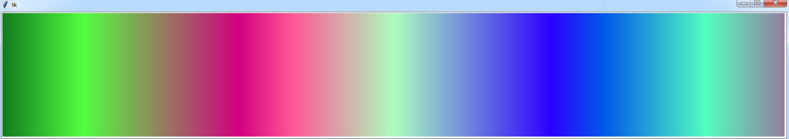
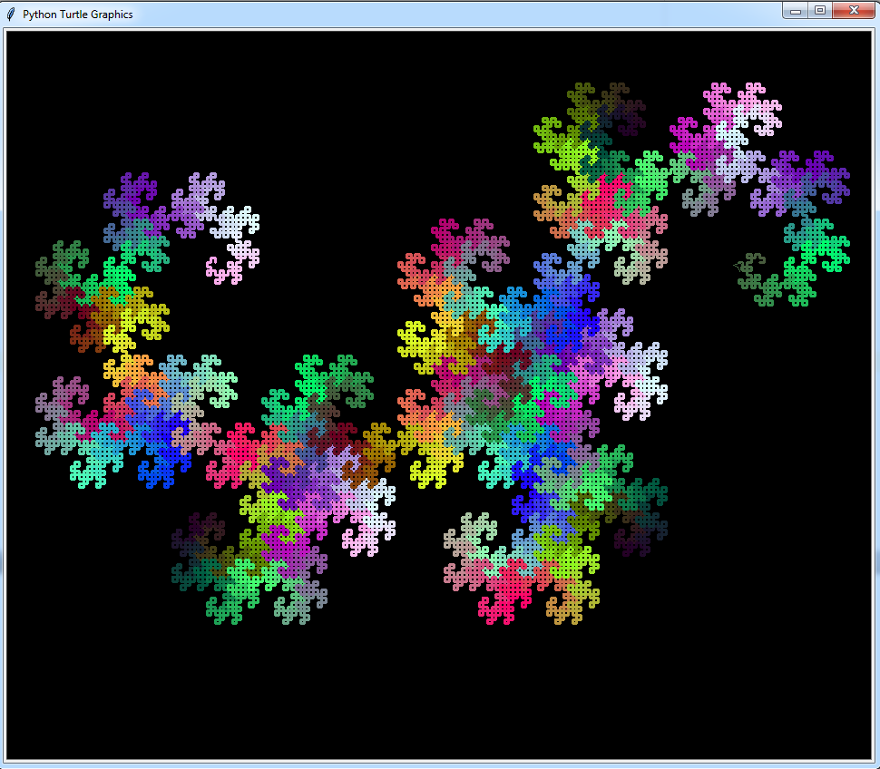
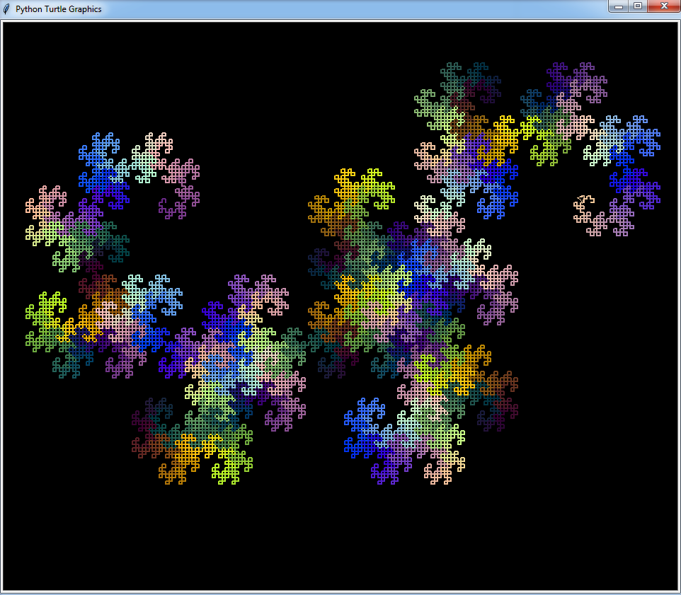

Прочтите про создание классов и объектов в python.
Запустим прыгающий мячик в куб с координатами от 1 до 255. В начале он ставится в случайную точку и получает случайную скорость в заданном диапазоне. Начальные значения задаются в функции __init__().
Функция change() перемещает мячик на один шаг и отслеживает отталкивание от стенок (за пределы куба вылетать нельзя!)
Функция get_color() превращает текущие координаты мяча (они могут быть нецелыми, если скорость меньше 1) в цвет в шестнадцатеричной кодировке.
Создайте класс Color_ball() и поместите его в отдельный файл. Теперь, если подключать его в качестве модуля к другим своим программам, можно получать красивые цветные картинки:


